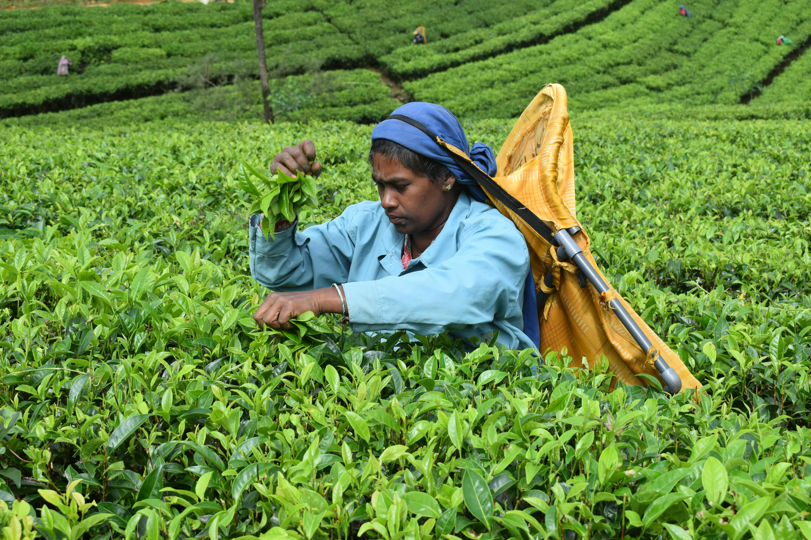
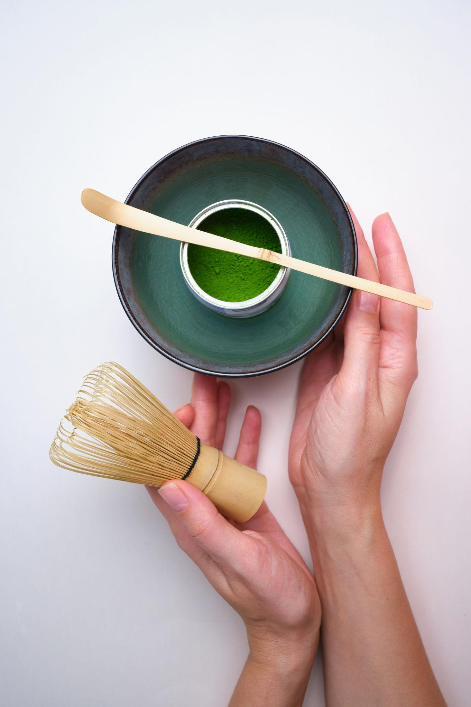

A Symphony of Rare Earth Blends
Curated from high-altitude gardens where every harvest tells a story of origin, shadow, and silent earth.

Single-Origin Philosophy
At Noirbrew, we believe tea is an expression of the soil, the shadow, and the stillness of the mountains. Our leaves are sourced from heritage estates that prioritize the rhythm of nature over the speed of production.
The Sommelier’s Flight
Three prestigious harvests selected by our masters for the current season.

Shadow-Grown Matcha
Vibrant, umami-rich stone-ground leaves from Uji, shaded for 21 days for maximum focus.
.jpg)
Imperial Aged Peony
A 5-year-aged silver needle blend from Fuding, offering a complex, honeyed restorative body.

Forest Vintage Pu'er
Earth-fermented leaves from old-growth trees in Yunnan, providing grounding depth and clarity.
The Alchemy of the Pour
Great tea is not just grown; it is awakened. We follow a thousand-year-old precision ritual to unlock every nuance of the leaf.
Vessel Selection
Zisha clay or porcelain chosen to balance the 'heat' of the specific tea type.
Water Kinematics
Soft spring water heated to precisely 85°C to preserve delicate theanine bonds.
Temporal Infusion
Layered steepings of 20, 30, and 45 seconds to reveal the 'arc' of flavor.

The Equinox Reserve
A Guide to Sensory Depth
Tea is a slow-motion film for the senses. Learn to appreciate the architecture of every sip through three core dimensions.
The Nose (Aroma)
Breathe in the steam before the first sip. Notice the initial earthiness and lingering floral high-notes.
The Palate (Body)
Let the tea coat your tongue. Identify the texture—from silk-like whites to velvet-heavy Pu'ers.
The Afterglow (Finish)
Wait 30 seconds after swallowing. The 'Hui Gan' or returning sweetness is the true soul of rare tea.

Wellbeing Taxonomy
The restorative science behind every curated harvest.
Cognitive Clarity
- Green & White Teas
- High L-Theanine Bonds
- Alpha-wave focus boost
Systemic Reset
- Herbal & Floral Infusions
- Polyphenol Density
- Restorative repair cycles
Emotional Stillness
- Oolong & Roasted Teas
- Natural GABA Activation
- Parasympathetic calming
Experience the Stillness
Step into a moment designed just for you — where time slows and stillness begins. Book your private ritual session today.